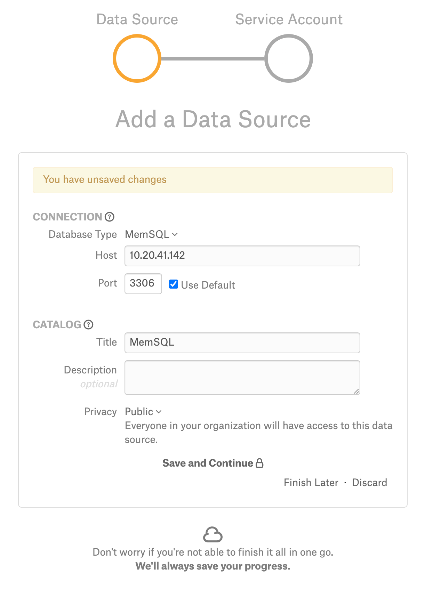
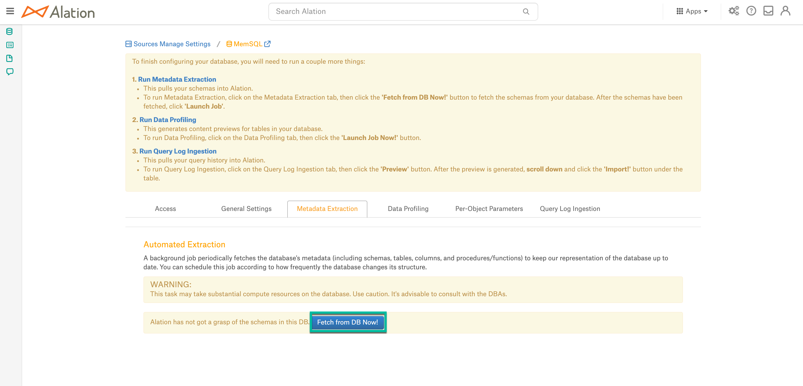
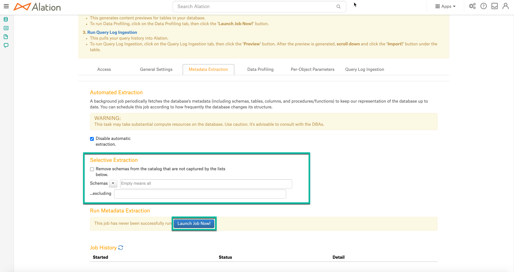
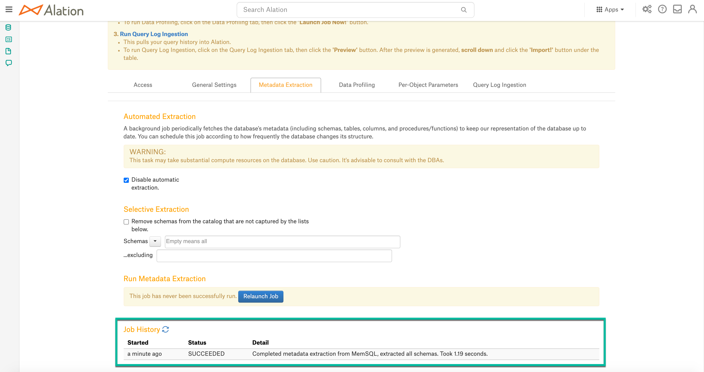
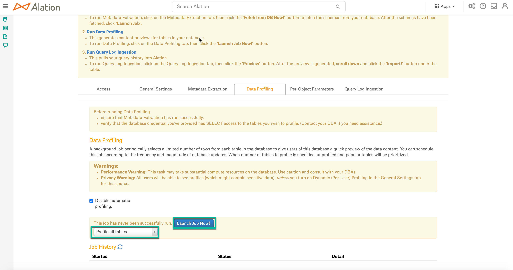

MemSQL¶
Important
Starting August 30, 2023, we will remove the ability to create new data sources using the MemSQL Native Connector. Support for the MemSQL Native Connector will cease on December 1, 2023, as set out in Alation’s Support Policy. See the Transition from Native to OCF Connectors announcement in Alation Community (requires login to Community).
Required Information¶
To configure MemSQL in Alation, you will need the following information:
Hostname or IP address of your server
Port number
Service account with privileges listed below
Preliminaries¶
Firewall Configuration¶
Open outbound TCP port 3306 to MemSQL server
Enable MemSQL Flag¶
Enable MemSQL flag in Alation shell, refer to Feature Flags For Data Sources.
alation.feature_flags.enable_datasource_memsql
Service Account¶
Sample SQL to create an account
CREATE USER ‘alation’@’%’ IDENTIFIED BY ‘[password]’;
Permissions¶
Metadata Extraction¶
GRANT SELECT ON [database].* TO ‘alation’@’%’; GRANT SHOW VIEW ON [database].* TO 'alation'@'%';
Profiling¶
GRANT SELECT ON [database].* TO ‘alation’@’%’; GRANT SHOW VIEW ON [database].* TO 'alation'@'%';
Steps In Alation¶
Step 1: Add a Datasource¶
Add a new Datasource on the Sources page, refer to Adding a Data Source.
Step 2: Set up the Connection¶
To add a MemSQL data source to Alation; On the Add a Data Source screen of the wizard, specify:

In the Database Type list select MemSQL;
In the Host field, provide the hostname or IP address of your server.
In the Port field, type the port number 3306;
Under Catalog, provide the Title, Description, and Privacy settings, and click Save and Continue. The next wizard screen - Set Up a Service Account - will open.
Step 3: Enter Service Account Credentials¶
Select Yes.
Provide the username and password of the service account created for Alation.
Click Save and Continue. After this step, you are navigated to the Settings page of your data source.
Metadata Extraction¶
To perform regular MDE,
On the Metadata Extraction tab, click Fetch from DB Now. Alation will fetch schemas from your data source.
You can now extract the metadata for all the schemas that Alation fetched (full extraction) or you can specify the schemas to be extracted from the list of fetched schemas (selective extraction). To perform full extraction, click Launch Job. To perform selective extraction, first, select the schemas you wish to extract, and then click Launch Job:
Once MDE has been completed, you should be able to see the extracted metadata in your Alation catalog. You can monitor the job status in the Job History table at the bottom of the page:

Profiling¶
Perform Profiling¶
Configure and perform Profiling (optional) and verify the results. Set the number of tables to be profiled by the Profiling job by selecting a value in the dropdown list on top of the Job History table. By default, all tables are profiled. When a specific number of tables to profile is selected, unprofiled and popular tables are prioritized.
Click Launch Job Now to perform profiling.
Automatic full and selective Profiling is supported. You can run a profile for one table or column on the Samples tab of the Table or Column page of this data source or use the Per-Object Parameters tab to specify which objects to profile.
Note
To profile a table during automatic Profiling, Alation issues a simple query for each table: SELECT * FROM <table>. Please note that from a cost perspective you may want to profile specific tables only and/or set a schedule to profile weekly or even monthly.
Query Log Ingestion¶
Not supported.